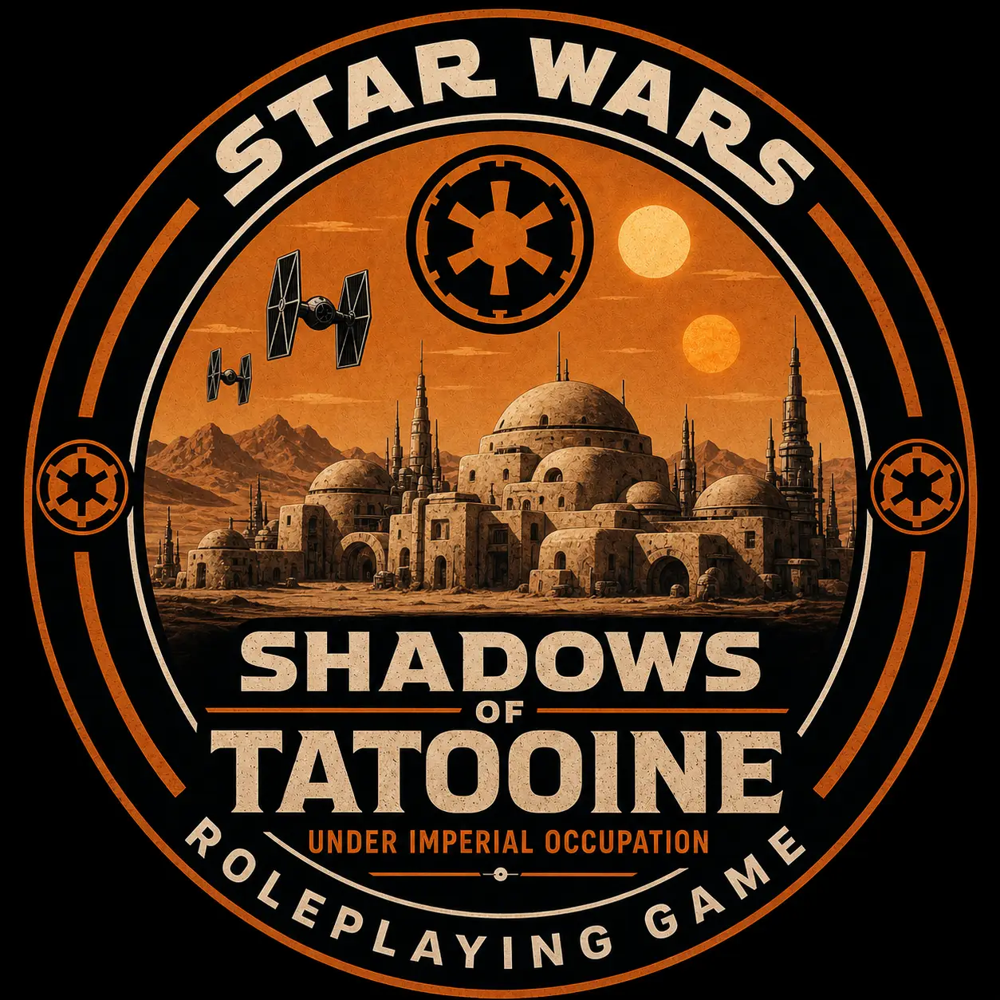
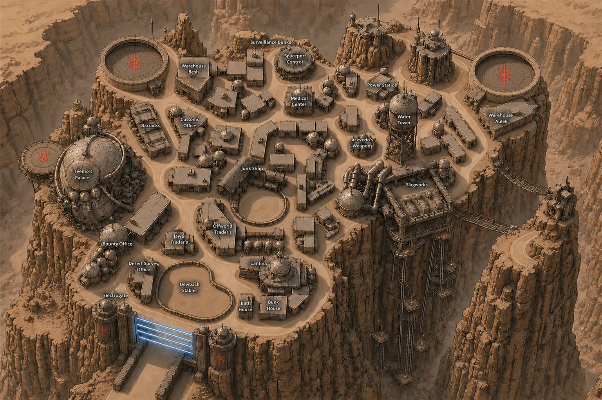

Jackal 01 / Active
Dex
Scoundrel / Gunslinger
A quick draw and a quicker smile. Dex survives on instinct, nerve, and the certainty that there is always another angle.
- Affiliation
- The Jackals
- Status
- At large

Shadows of TatooineA Star Wars D6 campaignCampaign transmission 001
Six drifters. One stolen freighter. An Imperial occupation closing in beneath the twin suns.
The campaign
The Empire has tightened its grip on Tatooine. The dunes conceal rebels, criminals, hunters, and the fragile beginnings of something larger.
Known as The Jackals, six survivors have been pulled into a widening conflict stretching from the streets of Mos Shuuta to the walls of Fort Tusken.
02 / Personnel files
Select a crew member to inspect their record, character sheet, and field reference.
Jackal 01 / Active
Scoundrel / Gunslinger
A quick draw and a quicker smile. Dex survives on instinct, nerve, and the certainty that there is always another angle.
03 / Campaign chronicle
Opening crawls and recovered records from the crew's journey across Tatooine.
Latest transmission / Session 04
The hunt turns bloody in the Jundland Wastes. A divided crew, a desert ambush, and the road to Fort Tusken leave the Jackals with new allies and a trail of bodies.
04 / Recovered intelligence
Bounties, intercepted broadcasts, crew intelligence, and evidence recovered in the field.

05 / Campaign atlas
Walk the streets of Mos Shuuta, inspect the Krayt Fang, and open the tactical records used at the table.